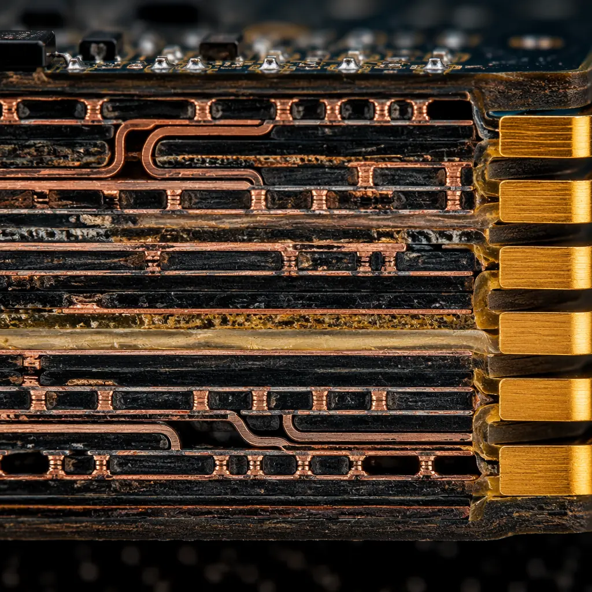
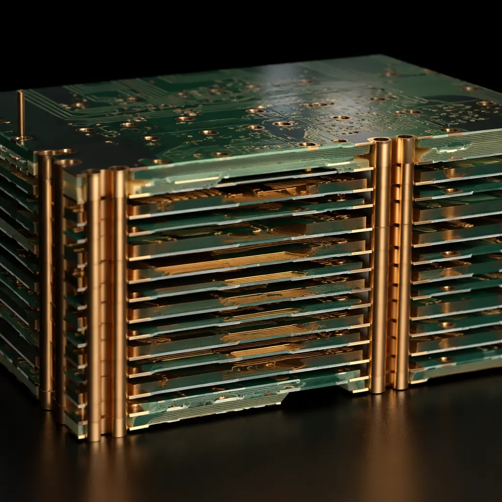
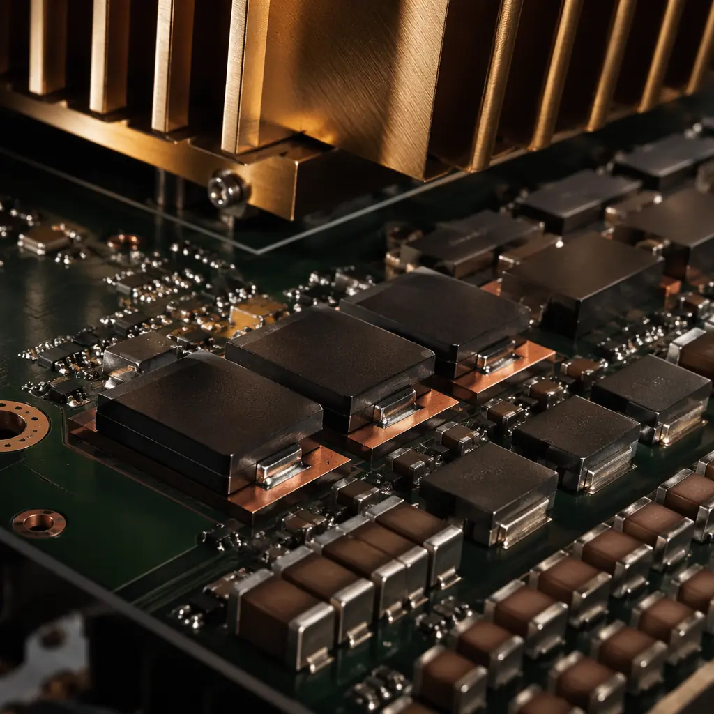
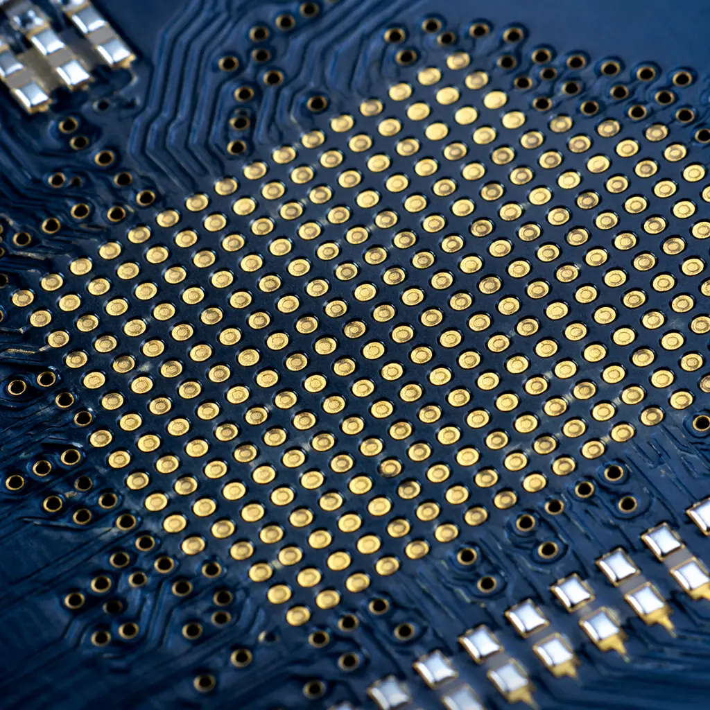

Every AI edge device — the smart camera performing real-time object detection, the autonomous mobile robot navigating a warehouse floor, the medical imaging system running inference at the bedside — starts with a PCB that pushes the boundaries of high-speed digital design. When your NPU or FPGA accelerator board carries 32 serial lanes each running at 25 Gbps, power rails delivering over 100A to a single ASIC, and a BGA pitch tight enough to challenge every via technology in your arsenal, "standard" PCB design rules break down fast.
At Huaxing PCBA, we manufacture HDI boards for edge AI applications from our 8 SMT line facility in Shenzhen, handling layer counts up to 32 with laser-drilled microvias and sequential lamination. This guide walks through the six PCB design decisions that determine whether your AI accelerator board meets its performance targets on the first spin — or enters a costly redesign loop. For foundational high-speed concepts, see our PCB signal integrity guide and impedance control deep-dive.

1. Laminate Selection: Why FR-4 Won't Cut It at 56 Gbps
The dielectric material you choose for an AI edge computing PCB determines everything: insertion loss at Nyquist frequency, skew within differential pairs, and whether your 112 Gbps PAM4 eye diagram opens or closes before it reaches the connector. Standard FR-4 (Dk ≈ 4.2–4.5, Df ≈ 0.020 at 1 GHz) introduces 0.8–1.2 dB/inch of loss at 14 GHz — manageable for PCIe Gen 4, catastrophic for PCIe Gen 5/6 or 112G SerDes.
Low-Loss Laminates: When Megtron 6 Becomes Mandatory
For 56 Gbps NRZ and 112 Gbps PAM4 links, Panasonic Megtron 6 (Df = 0.002 at 1 GHz) or Isola Tachyon 100G (Df = 0.0019) are the industry baseline. These materials reduce insertion loss to 0.35–0.50 dB/inch at 14 GHz — roughly half the loss of FR-4. At these data rates, every 3 dB of margin you recover through material selection is one less equalization stage your SerDes needs.
Matching Dk Across the Stackup
Differential impedance depends on the effective Dk of the dielectric surrounding the trace. When your stackup mixes a low-Dk core with a higher-Dk prepreg — common in hybrid constructions — the impedance on outer layers can deviate by 3–5 Ω from the target 100 Ω differential. Specify glass-weave style (106, 1080, 2116) and resin content percentage in your fabrication notes, not just the laminate brand. For impedance-critical designs, see our PCB stackup design guide.
High-Tg for High-Power AI ASICs
AI accelerators routinely dissipate 75–150W. The PCB substrate under a large BGA must survive continuous operation at 130–150 °C without delamination or CAF (conductive anodic filament) growth. Specify Tg ≥ 170 °C (Megtron 6 is Tg 185 °C) and Td (decomposition temperature) ≥ 350 °C. If your design pushes beyond 150W, read our thermal management guide for heat dissipation strategies.
Procurement Reality: Megtron 6 adds $8–15/ft² over standard FR-4. For a 16-layer, 200 × 250 mm board, that's $180–340 in raw material cost. But one respin avoided pays for the laminate 10× over. Specify the material in your RFQ — don't let the fab house choose for you.
2. Stackup Architecture: How Many Layers Does Your AI Board Actually Need?
Layer count for AI accelerator boards is driven by two constraints: BGA breakout density and power delivery impedance. A typical edge AI board carrying an NVIDIA Jetson Orin (699-ball BGA, 0.8 mm pitch) plus four LPDDR5 packages needs 10–14 layers minimum. A custom FPGA accelerator with a 1,760-pin BGA and eight 25 Gbps transceiver channels pushes to 16–22 layers. The stackup isn't just about routing — it's about embedding enough plane capacitance to keep core voltage ripple below 20 mVpp during load transients.

Signal Layer Allocation
Budget your layers: 2–4 layers for BGA fanout (via-in-pad + blind/buried vias), 4–6 layers for high-speed differential routing (PCIe, Ethernet, MIPI CSI), 2–4 layers for power distribution, and 2–3 ground planes for return-path continuity. A 16-layer board might stack as: SIG–GND–SIG–PWR–GND–SIG–GND–SIG || SIG–GND–SIG–PWR–GND–SIG–GND–SIG. If BGA pitch drops to 0.5 mm, you'll need HDI with microvias — standard through-hole vias can't fan out at that density.
Power Plane Capacitance
AI ASICs pull 50–150A at 0.75–1.1V core voltage. The plane capacitance between adjacent power/ground layers provides the first line of defense against transient droop. A 200 × 200 mm power-ground pair with 3 mil separation yields ~47 nF of embedded capacitance. Every additional power-ground pair you add reduces the PDN impedance at mid-frequency (1–100 MHz), shrinking the number of discrete decoupling capacitors needed. For power electronics PCB considerations, see our power electronics design guide.
Backdrill for Stub-Free Vias
At 28 Gbps and above, via stubs longer than 10 mils create impedance discontinuities and resonant nulls in the insertion loss profile. Backdrilling removes the unused portion of plated through-holes on high-speed nets — specify backdrill depth tolerance of ±4 mil and confirm with time-domain reflectometry (TDR) on the first article. For via technology fundamentals, read our PCB via technology guide.
3. Signal Integrity: Routing 112 Gbps PAM4 on a PCB
At 112 Gbps PAM4, the unit interval is 8.93 ps — the time it takes light to travel about 2.7 mm in vacuum. Your differential pair must maintain impedance within ±5% from driver die to receiver die, through package vias, PCB traces, and connector transitions. Intra-pair skew exceeding 2 ps turns differential signaling into common-mode noise. Here's what breaks and how to prevent it.
| Data Rate | Min. Laminate Df | Max. Trace Length (no retimer) | Via Stub Limit | Impedance Tolerance |
|---|---|---|---|---|
| PCIe Gen 4 (16 GT/s) | 0.008 (FR-4 OK) | 12 inches | 25 mil | ±10% |
| PCIe Gen 5 (32 GT/s) | 0.004 (Megtron 4) | 8 inches | 15 mil | ±7% |
| 56 Gbps PAM4 (112G) | 0.002 (Megtron 6) | 5 inches | 10 mil | ±5% |
| 112 Gbps PAM4 (224G) | 0.0015 (Tachyon 100G) | 3 inches | 5 mil | ±3% |
For boards mixing these data rates — common when an NPU talks PCIe Gen 5 to a host and 25 Gbps Ethernet to the network — route the highest-speed lanes first. Their constraints (shorter, tighter, fewer vias) cascade down to the slower lanes. Group lanes by speed grade with at least 5× dielectric thickness separation between groups to prevent crosstalk from Gen 5 aggressors coupling into 112G victims.
4. Power Delivery: Feeding a 150W AI Accelerator Without Voltage Droop
An AI ASIC running inference at 100% utilization can swing its current draw from 20A to 120A in 50 nanoseconds. The PCB's power distribution network (PDN) must keep the core voltage within the specified tolerance — typically ±3% or ±30 mV for a 1.0V rail — during these transients. If the PDN impedance exceeds the target (often 1–5 mΩ across 100 kHz–100 MHz), the voltage droop triggers a brownout and the chip resets.

Decoupling Strategy by Frequency Band
Low-frequency (DC–100 kHz): Bulk electrolytic or polymer capacitors (100–470 μF) at the VRM output. Mid-frequency (100 kHz–10 MHz): MLCC arrays (10–47 μF, X7R, 0805/1206) placed as close to the ASIC power pins as the placement density allows. High-frequency (10 MHz–1 GHz): Low-ESL MLCCs (0.1–1 μF, 0201/0402 reverse-geometry) on the BGA breakout layer, directly under the die shadow. Target 20–30 decoupling caps per rail for a 100A+ ASIC.
DC Resistance (DCR) Budget
At 120A, every milliohm of DCR in the power path burns 14.4W as heat (I²R). Use 2 oz or 3 oz copper on power layers, parallel multiple vias per power pin (8–12 vias per BGA power ball), and consider embedded copper coin technology under the ASIC to spread current and heat simultaneously. For heavy copper design rules, see our heavy copper PCB guide.
Design Check: If your PDN simulation shows impedance peaks above the target at any frequency, do not assume "we'll fix it with more caps." Caps only shift the resonance — they don't eliminate it. You need plane pairs with tighter spacing or a different stackup. Simulate before you route.
5. Thermal Design: Keeping a 150W ASIC Below Junction Temperature
Edge AI devices rarely have fans. A vision system on a factory line, an autonomous drone, or a roadside inference unit all rely on passive cooling — heat sinks, thermal vias, and copper planes conducting heat to the enclosure. The PCB itself must move 5–15W of heat away from the ASIC through the board thickness. That's where thermal via arrays and embedded copper planes earn their place in the BOM.
Thermal Via Arrays Under the Die
Fill the ASIC footprint with a grid of plated thermal vias (0.3 mm drill, 1.0 mm pitch) connecting the top-layer thermal pad to internal ground planes and a bottom-side heat spreader. A 20 × 20 via array with 1 oz copper plating yields ~3–5 °C/W thermal resistance from junction to board. Plug and cap the vias to prevent solder wicking during assembly. For more strategies, see our PCB thermal management guide.
Copper Balancing for Warpage Control
A 16-layer board with heavy copper on power layers and thin copper on signal layers will warp during reflow — potentially cracking BGA joints. Target ±10% copper coverage symmetry across the stackup centerline. If your design puts 70% copper on layers 1–8 and 30% on layers 9–16, add copper thieving (dummy fill) on the sparse layers to balance thermal expansion. Mixing copper weights across layers? Our stackup design guide covers the symmetry rules in detail.
6. DFM for AI Boards: HDI Rules That Prevent Fabrication Rejects
The same design features that make AI accelerator boards perform — 0.5 mm BGA pitch, via-in-pad, laser-drilled microvias — also make them harder to manufacture. A design that routes perfectly in your EDA tool can still fail at fabrication if it violates the fab's HDI capability limits. Here are the rules our 120,000 panels/month production floor lives by.

Microvia Aspect Ratio and Stacking
Laser-drilled microvias have a maximum aspect ratio (depth/diameter) of 1:1 for reliable plating. A 4 mil via can only penetrate a 4 mil dielectric layer. Stacked microvias (via-on-via across sequential laminations) are possible but require filled-and-plated intermediate layers — specify "copper-filled, planarized" in your fab notes. Staggered microvias are more reliable and cheaper: offset each layer's vias by at least one drill diameter. For HDI fundamentals, see our HDI technology guide.
Minimum Annular Ring for Reliability
IPC Class 2 allows 1 mil annular ring — but for AI boards operating at elevated temperatures with high layer counts, specify IPC Class 3 with 2 mil minimum annular ring. The thermal cycling from 25 °C to 125 °C (idle to full inference load) stresses every plated hole. Tighter annular rings fail earlier. Not sure which IPC class your product needs? See our IPC Class 2 vs Class 3 comparison.
Solder Mask Registration on 0.5 mm Pitch
At 0.5 mm BGA pitch, the land pad diameter is ~0.25 mm leaving a 0.25 mm gap between pads. Standard solder mask registration tolerance is ±2 mil (0.05 mm) — tight but workable. If any solder mask encroaches onto a pad, it reduces the solderable area and risks opens. For 0.4 mm pitch and below, consider solder-mask-defined (SMD) pads or skip solder mask entirely under the BGA (NSMD with OSP finish). For finish selection guidance, read our surface finish comparison and solder mask selection guide.
From Prototype to Production: What to Send to Your Fab
AI edge computing PCBs are among the most demanding boards a fab house receives. The difference between a board that passes bring-up on the first power-on and one that spends three months in debug is 95% in the fabrication notes you include with your Gerber package. Specify the laminate by brand and type (not just "low-loss"), the impedance profile per layer, the backdrill requirements per net class, and the IPC class for every via structure.
At Huaxing PCBA, we manufacture HDI boards for edge AI applications with laser-drilled microvias down to 0.1 mm, sequential lamination up to 4-step HDI, and impedance control to ±5% across 32 layers. We support Megtron 6, Tachyon 100G, and Rogers 4350B laminates with in-house TDR verification on every impedance-controlled panel. Our 8 SMT lines handle 0.4 mm BGA pitch with ±25 μm placement accuracy. Send us your Gerber files and stackup requirements — our engineering team provides a free DFM review with your quote, typically within 24 hours.